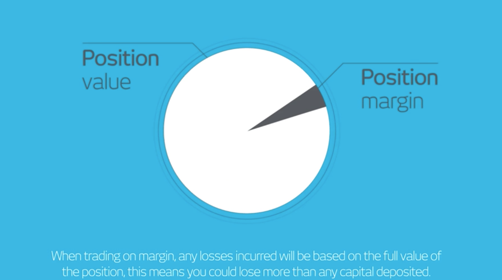
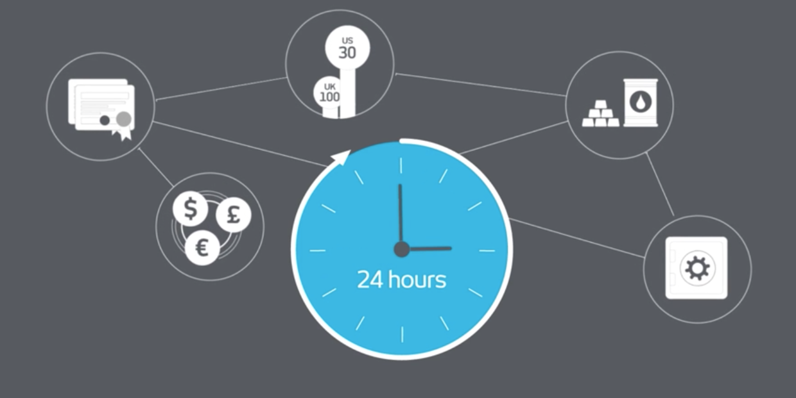

金融产品
和技术无关， 讲讲关于如何赚钱、或者如何亏钱, 一些方法和工具，以及我对新金融的一些个人看法。专业术语请参考专业文献。
对冲 (Hedge)¶
首先先区分下，对冲(Hedge)和套利（Arbitrage）的差异 What is the difference between arbitrage and hedging? ：
Hedging involves the concurrent use of more than one bet in opposite directions to limit risk of serious investment loss.
Arbitrage is the practice of trading a price difference between more than one market for the same good in an attempt to profit from the imbalance
对冲涉及同时参与两个相反方向的交易，来避免投资中可能出现的严重失利； 而套利是利用两个市场价格之间的不平衡来赚取差价。
比如A市场某个产品X卖价100，但是B市场卖价105，在A市场买入，到B市场卖出，可以无风险套利5块钱， 当然需要出去一些交易手续费等， 这个是套利。
对冲策略的“意义”在于去掉某种我们不想承担的风险！从而只保留我们想要的风险。 可以看到套利是“乐观”主义，而对冲是“悲观”主义－－风险永远都在，有的我们是无法避免，唯有合理的防范，方能降低风险的影响。
为什么参与两个完全相反方向的交易的， 这里交易的一般不一样金融产品合约； Options、forward、swaps 其它一系列衍生品合约（Contract）会被用来对冲； 对冲可能导致你的**利润减少**，但是会大大降低你的风险，记得 这点可能对于你下面的理解， 或今后的投资理念有一定的影响。
>如果我们对某家公司有强烈的看法（好坏皆可），但是 我们并非股市专家，在股市整体走势预测上没有优势，那么我们就可以选择 买入股票（假设看好）+ 做空股指 以获得纯粹的公司自身经营回报。 这时 回报 = 股票回报 - 整个股市回报（股指）= 自身经营回报。 风险也变成了只有自身经营风险 -知乎
比如看好google 股票， 但是对美国整体经济趋势不懂， 可以做多google 股票， 做空美国股指，对冲掉 股市的风险 ，如果股市上涨50%， google 上涨70%，可以赚得20%； 如果股市下跌50%，google 下跌30%，我们还是赚得20%。只要我们判断正确，”即google未来会很好” （至少好过大盘），我们就能一直赚取google和大盘指数的**差价**， 这里有一前提需要强调：你得有某个方面经验，你的判断得非常有把握，知道google 必然好于整体经济，而不是盲目。
对冲的思想也扩展到金融领域的方方面面，我们可以对冲汇率风险，对冲利率风险，对冲某种原材料风险，只要你能想的到就行。但其思路从未变过，就是剥离我们不想要的风险， 其实对于我们日常生活这也是一个非常重要的概念。
详细的描述可以参考知乎里面的解释：对冲策略的意义在于哪里 。
CFD¶
CFD contract for different, 人称差价合约，是一种金融衍生品，Investor和CFD provider就一个 **标的资产**（可以是股票、商品、指数、外汇、钻石、比特币...anything）未来某日的价值和当前价值的差价签订一份合约，到了那一天，标的资产价格上涨了，根据合约，CFD provider给investor支付差价，如果下跌，investor给CFD provider支付差价。
简单一句话CFD 是交一份保险， 在未来某天以当前的价格买入或者卖出某个金融产品，只不过这个行权是没有固定日期的，这样事必给提供方（maker, provider)带来潜在的风险，这份保险费用就是你的隔夜费，可以借此体验套利和对冲的不同意义！
所以CFD 的英文名字很精确，这里只有一个差，所有可以用数字衡量量化的标的都可以用来做合约。 这使他可以标的几乎所有的金融产品。你可以比如以上海明天 2017-11-05 的温度是否超过25度作为一个合约和别人进行交易。
CFD 金融产品的几点特征需要说明下：
- 你不能拥有标的资产， 比如股票， 你不能享受股票的分红拆息等，但是也少了印花税(stamp duty)
- 你可以T+0
- 可以做空做多
- 带杠杆
- CFD 非标准化产品
- 交易时间更长
可以说CFD给喜好逐利的人带来了一片乐园，但是所有的投资工具和方法，都只是一个中性的事物， 不随人的喜怒哀乐而改变，市场对于没有准备或者没有控制力的人说都是异常残酷， 其实人生又何尝不是？
 刚刚前文说，对冲概念， CFD 最好是作为对冲工具来使用，比如按照上面的google 的例子，你可能买入持有google 股票（真的google股东哦！）， 然后再对美股指数， 做一个空单，CFD由于是Marigin 交易， 所以你只需要你投资额的1/200 或者 1/100的资金来对冲你的投资组合， 这更像一种对你投资的保险，但是以少量代价保护高风险投资资产是一件值当的事情。特别在如果你的判断出现偏差情况下。
其实这里我想说的和CFD 没有关系，CFD 被很多人误用，这也导致CFD 被很多人诟病，CFD在很多国家没有得到正式的承认。 我要说的是：
金融平等¶
CFD 是一种能够很好对冲你现有投资资产的工具。对于绝大部分的中小投资者（散户或者韭菜）来说，能够很好保护自己的资产是件非常难的事情， 投资股票经常被割， 投资房产又不够，加入私募人不要。但是CPI 不等人，而CFD是现有金融市场上面一个为数不多可以用的上的工具。
据全球化最新的报道， 虽然整个世界都在扁平化， 但是整个全球的财富分配，却越来越不均，看似全球的物质、财富都得到了提升， 但是对于富有的阶层，这部分财富增长率更高， 相比较而言，剩下的群体其实被剥夺了愈多。
真正意义上的平等， 不在于打开大门， 放低准入的门槛， 同时得有相关的规则让每个人得到真正意义上的参与。金融世界里面的不平等，在笔者看来是诸多不平等比较突出和显著的一个领域。一部分人与生俱来不能享受更多金融体系带来的实惠。这个让我想起来一本金融书里面的第一句话： Adverse Selection and Moral Hazard,这两点又何尝不是当今社会我们最大的隐形成本？如今信息爆发的时代，看似每个人获得更多的机会，但是没有合理地借助适当的工具、体系和方法过滤去噪提炼，其实弱势者更有可能被欺凌。
金融平等、普惠的时代，必须有一种工具能够很好的捍卫个人金融平等，不管这个工具是否是CFD，但他需要满足：
- 低门槛， 人人都可以参与
- 低成本
- 过程费用
- 学习理解的成本
- 高透明度
- 高自由度
- 自治， 自我监督和管理，和上面两点相辅相成
至于这个系统是自顶向下，还是自底向上实现， 笔者更趋向于后者，在互联网和移动思潮下， 其实有不止一个行业被这样改造；大到零售、物流、通讯、支付；小到吃饭、聚餐、看个电影、骑个车；这样的趋势将越来越明显，也必将成为主流， 未来的你我都将成为产消一体者， 至于中间的链节， 将被大大的压缩，甚至省去，达到某种意义上的零边际成本。
金融产品某种意义上和其它的产品没有本质的差别，但是金融产品整个环节的成本可能没有被大部分人注意，其实比起其它行业这些成本尤为昂贵，最终这些成本又植入到我们生活的点点滴滴，也许在不久将来基础设施、体系完善，条件允许下人与人之间的金融产品交易、转移未尝不可，这将大大缩小时间成本和加快流通的效率。
其实在金融领域已经有诸多的尝试和探索在这方面的理论和应用的可能性， 希望不久将来能够真正给金融领域带来普罗米修斯之火。
CFD vs 永续合约 ? 这个开放问题，可以想想。